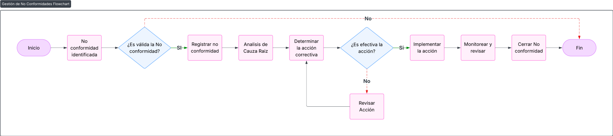

Procedimiento de Verificación y Mejora Continua de la Seguridad de la Información
1 OBJETIVO
Definir cómo PRODISMO SRL verifica de forma periódica que se cumplen las políticas, los procedimientos y los requisitos técnicos de seguridad de la información; cómo se revisan las políticas; cómo se realiza la auditoría interna; y cómo se corrigen las no conformidades, según la política MC151-IT-1. Toda verificación deja un registro.
2 ALCANCE
- Todas las áreas y procesos incluidos en el alcance del SGSI (sede de Córdoba).
- Verificaciones técnicas de los sistemas de IT (accesos, vulnerabilidades, autenticación, cifrado, backups, software y accesos remotos).
- Todas las políticas y procedimientos del SGSI publicados en el portal de documentación.
- No conformidades que surgen de auditorías internas y externas, verificaciones, incidentes y de la revisión por la dirección.
3 REFERENCIAS
- Política MC151-IT-1 Auditorías Internas del SGSI.
- ISO/IEC 27001:2022 cláusulas 9.2 y 10.2, controles A.5.36 y A.8.8; ISO 19011:2018; VDA ISA 6 control 1.5.1.
- F151-IT-1 Informe de Auditoría Interna; F151-IT-2 Checklist de Auditoría Interna; F151-IT-3 Plan de Acción Correctiva; F151-IT-4 Registro de No Conformidades y Acciones Correctivas; F151-IT-5 Programa de Verificación de Cumplimiento.
- F33a-0 Plan de auditorías y revisión por la dirección; F33b-0 Planificación detallada de la auditoría interna.
- M141-IT-1 Matriz de Riesgos; F133-IT-3 Verificación de Servicios y Software No Aprobados.
4 ROLES Y RESPONSABILIDADES
| Rol | Responsabilidades |
|---|---|
| Alta Dirección (Damián Pedrosa) |
|
| RSI (Germán Montalbetti) |
|
| Administrador de IT (Emiliano Ferrari) |
|
| Auditores internos |
|
| Responsables de áreas |
|
5 DESCRIPCIÓN DEL PROCEDIMIENTO
5.1. Programa de verificación de cumplimiento
El RSI mantiene el programa anual F151-IT-5, con el contenido, la herramienta, la frecuencia, el responsable y los meses previstos de cada verificación:
| ID | Verificación | Cómo / herramienta | Frecuencia | Responsable |
|---|---|---|---|---|
| V-01 | Permisos de acceso (Active Directory, SharePoint, Teams) | Export de grupos y miembros; revisión con los responsables de área | Cuatrimestral | Emiliano Ferrari |
| V-02 | Cuentas de personal dado de baja (Microsoft 365, tulegajo.com, SIP, Snipe-IT) | Cruce con la lista de bajas de RRHH | Cuatrimestral y en cada baja | Emiliano Ferrari / Mariano Nieto |
| V-03 | Vulnerabilidades y parches | Microsoft Defender for Endpoint y Wazuh | Mensual | Emiliano Ferrari |
| V-04 / V-05 | MFA en cuentas corporativas / BitLocker en notebooks | Informes de Entra ID y de Defender / Intune | Trimestral | Emiliano Ferrari |
| V-06 / V-07 | Ejecución de backups / prueba de restauración | Registros de la herramienta de backup; restauración de una muestra | Mensual / trimestral | Emiliano Ferrari |
| V-08 | Software y servicios no aprobados | Inventario de software contra F134-IT-1; apps de Entra ID (F133-IT-3) | Semestral | Germán Montalbetti |
| V-09 | Configuración segura de AnyDesk | MFA y acceso desatendido en todos los equipos | Semestral | Emiliano Ferrari |
| V-10 | Prueba de penetración / escaneo externo | Proveedor externo (primera: 11/2026) | Anual | Germán Montalbetti |
| V-11 a V-16 | Seguimiento de no conformidades, revisión de riesgos, revisión de políticas, auditoría interna, revisión por la dirección y evaluación TISAX | Ver F151-IT-5 | Mensual a anual | RSI / Alta Dirección |
- Cada verificación realizada se registra en la hoja "Registro de verificaciones" del F151-IT-5: fecha, quién la hizo, resultado y ubicación de la evidencia (export, captura o informe).
- La evidencia se guarda en SharePoint IT, en la carpeta del año y de la verificación.
- Todo desvío se registra como hallazgo en el F151-IT-4 (sección 5.4).
5.2. Revisión de políticas y procedimientos
- El RSI revisa cada política y procedimiento al menos una vez al año, y antes si cambian la organización, la infraestructura, los requisitos legales o de clientes, o después de un incidente o una auditoría.
- Las fechas de última y próxima revisión de cada documento están en la hoja "Listado maestro de documentos" del F151-IT-5.
- Cada revisión queda en el historial de revisiones del documento (número, fecha y cambios) y la nueva revisión la aprueba la Alta Dirección.
- Los cambios se comunican al personal por mail o Teams y, si corresponde, con capacitación.
5.3. Auditoría interna
- Planificación: la auditoría completa del SGSI es anual, según el plan F33a-0; el detalle por área, requisitos, responsable y auditor se define en el F33b-0. Se notifica a las áreas con al menos 15 días de anticipación.
- Independencia: ningún auditor audita su propio trabajo; los procesos del Departamento IT los audita Jessica Villarreal.
- Ejecución: reunión de apertura, entrevistas, revisión documental y verificación en sistemas por muestreo. El auditor completa el checklist F151-IT-2 durante la auditoría (resultado, observación y fecha por ítem) y conserva sus notas.
- Cierre: reunión de cierre con los hallazgos clasificados (no conformidad mayor, menor u observación, según MC151-IT-1 §7.3).
- Informe: el informe F151-IT-1 se emite dentro de los 10 días hábiles (Microsoft Forms o Word) y se distribuye a la Alta Dirección, el RSI y las áreas auditadas.
5.4. Gestión de no conformidades

Diagrama de flujo de No Conformidades
- Registro: todo hallazgo se registra en el F151-IT-4 con ID (NC-AAAA-NN u OBS-AAAA-NN), origen, requisito y descripción.
- Corrección inmediata: se elimina el desvío detectado (por ejemplo, desinstalar el software o dar de baja la cuenta).
- Causa raíz: el responsable del área analiza por qué ocurrió.
- Acción correctiva: se define en el F151-IT-3 con responsable y fecha (no conformidad mayor: 30 días; menor: 90 días).
- Verificación de eficacia: una persona distinta del responsable comprueba que el problema no se repite.
- Cierre: se registra la fecha de cierre en el F151-IT-4. Si la no conformidad revela un riesgo nuevo, se agrega a la Matriz de Riesgos M141-IT-1.
Ejemplo real (auditoría interna AUD-2026-01): NC-2026-01 software sin licencia en PC de usuarios; NC-2026-02 AnyDesk con acceso desatendido y sin MFA; NC-2026-03 cuentas de personal dado de baja activas en Microsoft 365 y tulegajo.com. Corrección, causa y acciones en el F151-IT-3 y el F151-IT-4.
5.5. Comunicación de resultados
El RSI presenta en la revisión por la dirección el estado del programa de verificación, los resultados de la auditoría interna y las no conformidades abiertas y cerradas.
6 RESUMEN DEL PROCEDIMIENTO
| Actividad | Frecuencia | Responsable | Registro |
|---|---|---|---|
| Verificaciones técnicas | Según F151-IT-5 | Emiliano Ferrari / Germán Montalbetti | F151-IT-5 (registro) + evidencia |
| Revisión de políticas y procedimientos | Anual y ante cambios | RSI; aprueba la Alta Dirección | Historial del documento; listado maestro |
| Auditoría interna | Anual | Auditores internos | F33a-0, F33b-0, F151-IT-2, F151-IT-1 |
| No conformidades y acciones correctivas | Ante cada hallazgo; seguimiento mensual | RSI y responsables de área | F151-IT-4, F151-IT-3 |
| Comunicación de resultados | Anual | RSI | Acta de revisión por la dirección |
7 REGISTROS Y EVIDENCIAS
| Registro | Retención |
|---|---|
| F151-IT-1 Informe de Auditoría Interna; F151-IT-2 Checklist completo | 5 años |
| F151-IT-3 Plan de Acción Correctiva; F151-IT-4 Registro de No Conformidades | 3 años después del cierre |
| F151-IT-5 Programa y registro de verificaciones, con la evidencia de cada verificación | 3 años |
| F33a-0 / F33b-0 Planes de auditoría | 5 años |
| Certificados de los auditores internos | Mientras el auditor esté activo + 2 años |
Evidencias para TISAX AL2
- Programa de verificación vigente (F151-IT-5) con contenido, cronograma y responsables.
- Registros de las verificaciones realizadas, con su evidencia.
- Listado maestro con la revisión anual de cada política y procedimiento.
- Último informe de auditoría interna (F151-IT-1) y checklist (F151-IT-2).
- No conformidades con su acción correctiva, seguimiento y cierre (F151-IT-3, F151-IT-4).
8 REVISIONES DEL DOCUMENTO
| Rev. N° | Fecha | Descripción |
|---|---|---|
| 0 | 25/8/2025 | Primera emisión del documento |
| 1 | 15/1/2026 | Revisión completa del documento |
| 2 | 14/11/2026 | Reescritura: programa de verificación de cumplimiento (F151-IT-5) con frecuencias reales; revisión de políticas con listado maestro; auditoría interna con independencia de auditores; gestión de no conformidades con registro F151-IT-4 y plan F151-IT-3; se eliminan los ejemplos genéricos de clientes, herramientas no usadas y registros de ejemplo. |